Regression comparison
Download resultsDataset
Training setting
Repulsion weight
Repulsion location
Compare repulsion locations
Method
Random points redraw every step and exclude all training inputs. Training and random use B points; combined uses 2B. Prediction axes match within each DE or BDKN row.
Functional repulsion
BetterWorse · relative rank within each column
DE
| Repulsion inputs | RMSE | NLL | Training seconds |
|---|---|---|---|
| Training | 61.61957 | 14.11814 | 0.50 |
| Random | 61.32155 | 13.70758 | 0.44 |
| Training + random | 61.19831 | 13.63355 | 0.50 |
BDKN
| Repulsion inputs | RMSE | NLL | Training seconds |
|---|---|---|---|
| Training | 60.83933 | 9.70318 | 0.67 |
| Random | 60.45368 | 9.54632 | 0.56 |
| Training + random | 60.36227 | 9.55725 | 0.67 |
Stage 1 · total loss and data fit
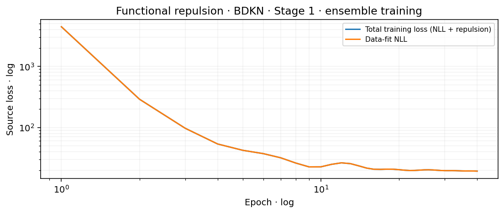
X: log · Y: log
X: log · Y: log
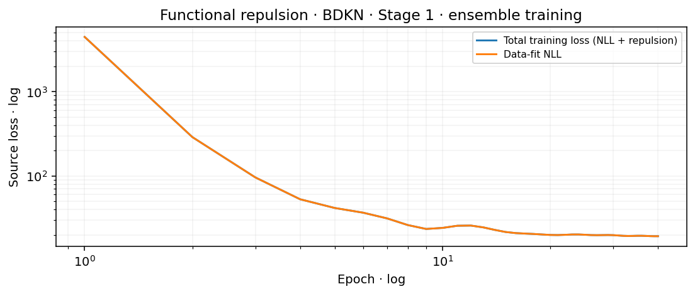
X: log · Y: log
Repulsion loss R only
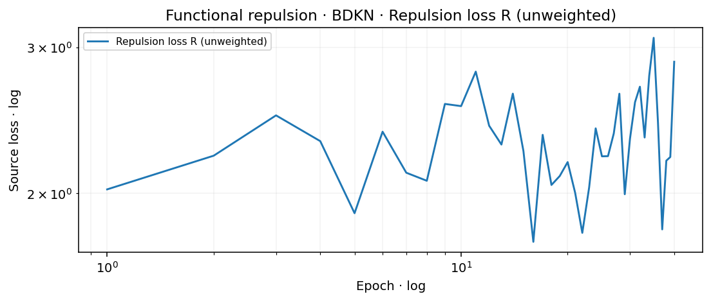
X: log · Y: log
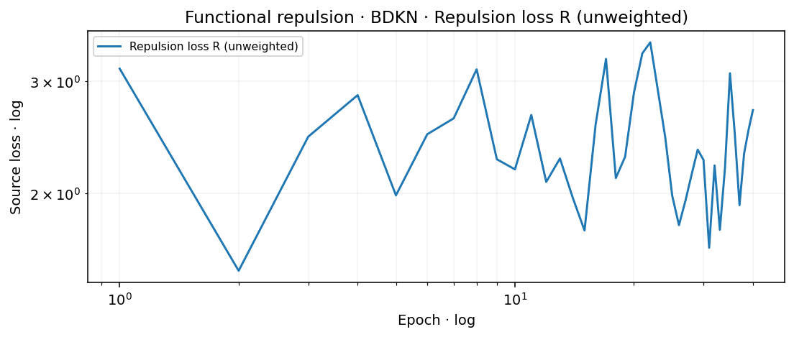
X: log · Y: log
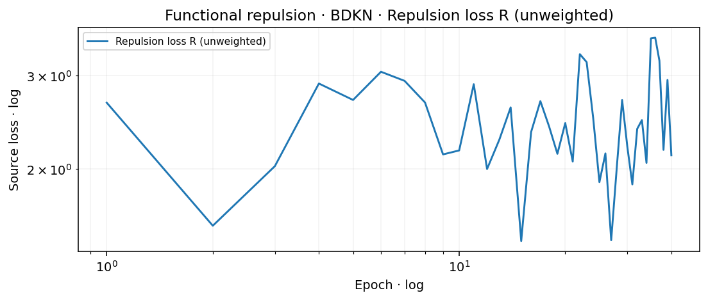
X: log · Y: log
Stage 2 · Bayesian marginal NLL
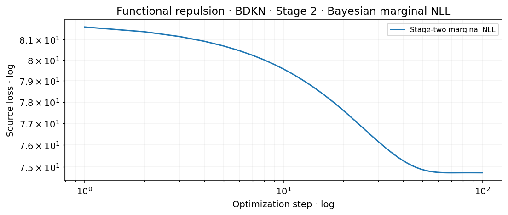
X: log · Y: log
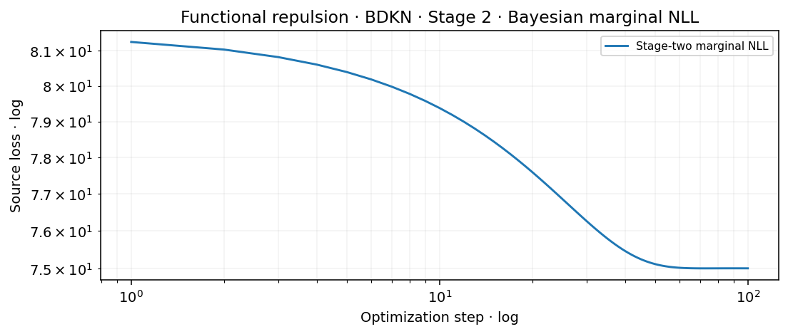
X: log · Y: log
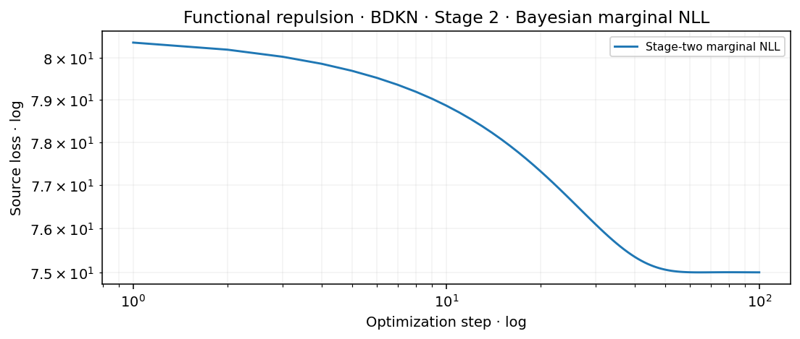
X: log · Y: log
First-order repulsion
BetterWorse · relative rank within each column
DE
| Repulsion inputs | RMSE | NLL | Training seconds |
|---|---|---|---|
| Training | 62.17194 | 14.37060 | 0.58 |
| Random | 60.98465 | 13.63861 | 0.59 |
| Training + random | 61.02473 | 13.48403 | 0.58 |
BDKN
| Repulsion inputs | RMSE | NLL | Training seconds |
|---|---|---|---|
| Training | 60.88753 | 10.10973 | 0.71 |
| Random | 60.39110 | 9.50208 | 0.72 |
| Training + random | 61.24434 | 9.33965 | 0.73 |
Stage 1 · total loss and data fit
Repulsion loss R only
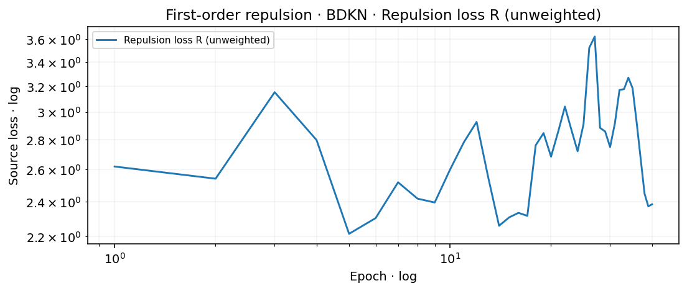
X: log · Y: log
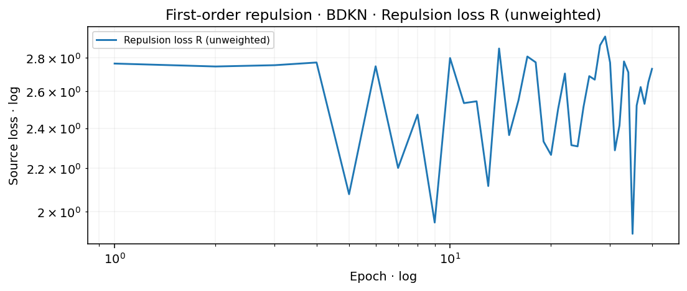
X: log · Y: log
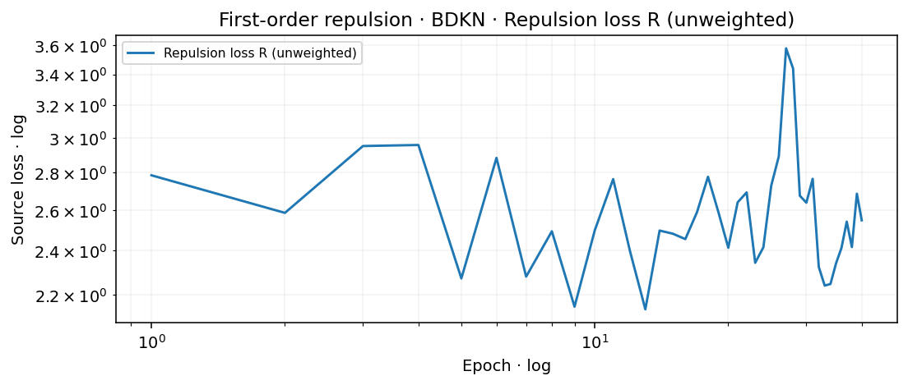
X: log · Y: log
Stage 2 · Bayesian marginal NLL
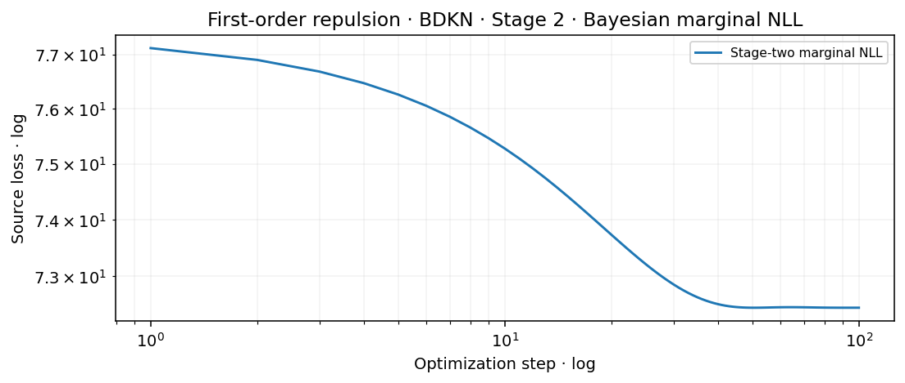
X: log · Y: log
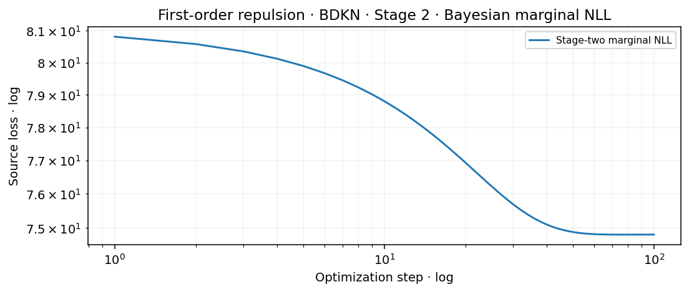
X: log · Y: log
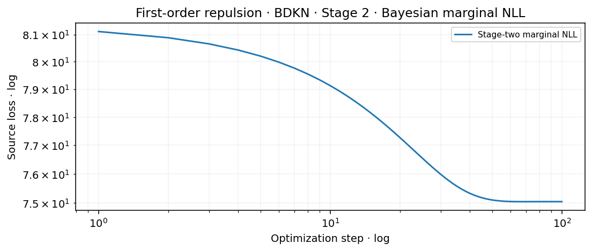
X: log · Y: log
Weight repulsion · location-independent
The loss compares network parameters directly. These same results apply to every location.
| Stage | RMSE | NLL | Training seconds |
|---|---|---|---|
| DE | 61.08178 | 6.75119 | 0.45 |
| BDKN | 59.91489 | 5.35935 | 0.58 |